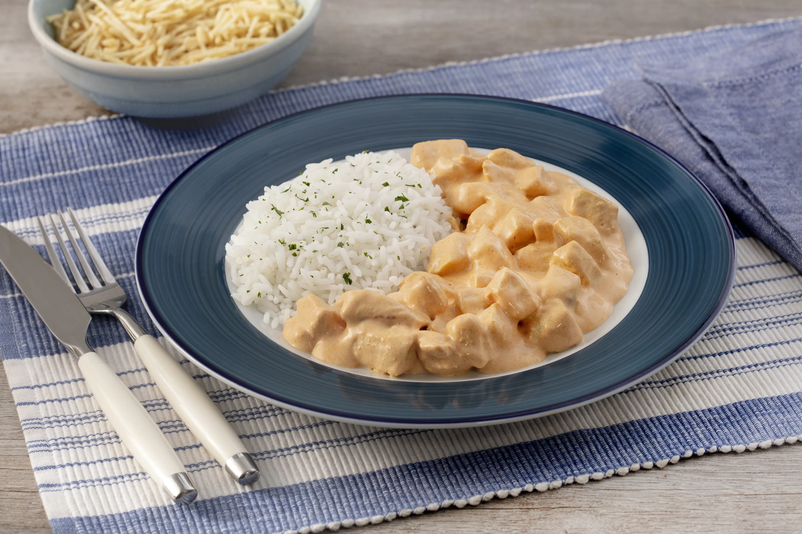

Na mesa
Nossas Receitas
Login

Strogonoff de Frango
Receita
• 500 g de peito de frango picado em cubos
• 1 lata de creme de leite
• sal a gosto
• batata palha a gosto
• 1 lata de molho de tomate
Forma de Preparo
1
Cozinhe o peito de frango até ficar bem cozido.
2
Após o cozimento, adicione o molho de tomate e cozinhe por 5 minutos em fogo baixo
3
Em seguida, adicione o creme de leite e cozinhe por mais 3 minutos, também em fogo baixo.
4
Por último, adicione o sal a gosto.
5
Sirva com batata palha e arroz branco à parte.